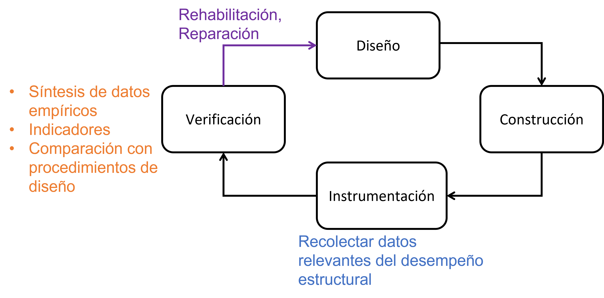
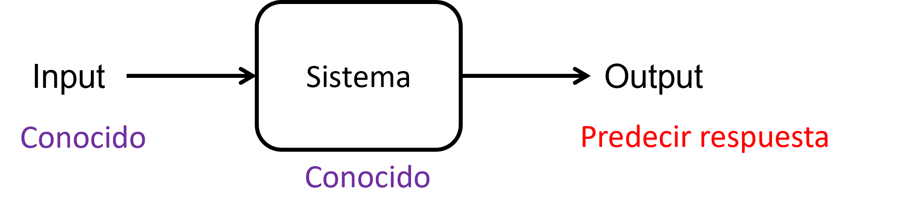
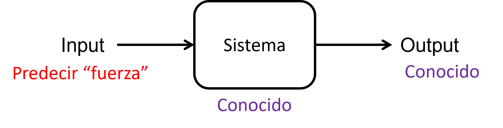
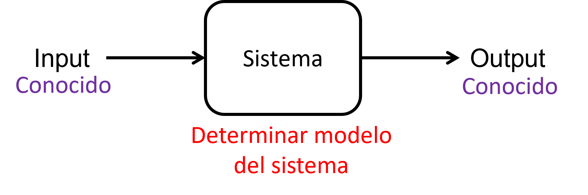
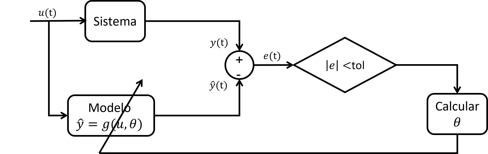
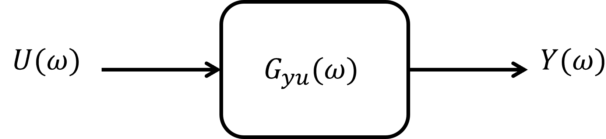
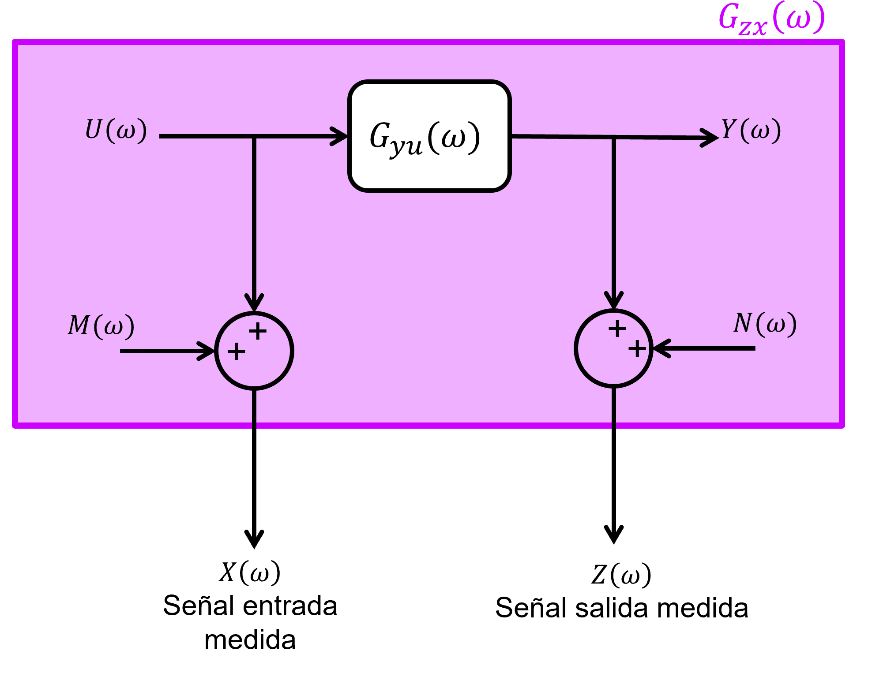

Nunca se está seguro de las propiedades exactas de una estructura.
Obras civiles “envejecen”:
Incertidumbre:
Un buen proyecto de monitoreo estructural (Structural health monitoring, SHM) tiene múltiples objetivos más allá de la instrumentación.

Para el monitoreo estructural se busca:
Análisis dinámico (problema directo)

Identificación de fuerza de entrada

Identificación de sistema

Estas predicciones se pueden realizar con distintos métodos:
Basados en dominio frecuencia
Basados en dominio tiempo
Resumen de identificación de sistemas (SysID):

Referencias: Craig y Kurdila (2006, Sec. 18.4) y Bendat y Piersol (2011, Cap. 6).
Dado un sistema LTI con entrada \(u(t)\) y salida \(y(t)\) conocidos experimentalmente, buscamos determinar de forma estimada
su FRF, \(G_{YU}(\omega )\).

\begin{align*} Y(\omega ) &= G_{YU}(\omega )U(\omega ) \quad \text {(FRF)}\\ y(t) &= (g_{YU} \ast u)(t) \quad \text {(FRI)} \end{align*}
Nota: Relación entre FRF y FRI: \(G_{YU}(\omega ) = \mathcal {F}\{g_{YU}(t)\}\)
Recordando el teorema de Wiener-Khinchin, que establece la relación entre densidad de poder espectral (\(S_{XX}(\Omega )\)) y autocorrelación (\(R_{XX}(\tau )\)) de un proceso estocástico w.s.s. \(\{X(t),t \in T\}\):
\begin{align*} S_{XX}(\Omega ) &= \mathcal {F}\{R_{XX}(\tau )\}\\ R_{XX}(\tau ) &= \mathcal {F}^{-1}\{S_{XX}(\Omega )\} \end{align*}
donde \(R_{XX}(\tau ) =\mathbb {E}\{X(t)X(t+\tau )\}\) y \(\mathcal {F}\{\cdot \}\) es la transformada de Fourier (contínua).
Mientras, para el caso en tiempo discreto se utiliza la definición de periodograma. Suponiendo una muestra finita de \(N\) puntos del p.e. \(\{X(t),t \in T\}\), con período de muestreo \(T_s\):
\begin{align*} x[n] = \begin{cases} x(n T_s), & n\in \{0,1,\ldots ,N-1\}\\ 0, & \text {otherwe} \end{cases} \end{align*}
Entonces, el periodograma se define como:
\begin{align*} \hat {S}_{XX}(\omega ) = \frac {1}{N} X(\omega ) X(\omega )^{*} = \frac {1}{N} |X(\omega )|^{2} \end{align*}
donde \(X(\omega )\) es la transformada de Fourier de tiempo discreto (DTFT) de la señal finita \(x[n]\):
\begin{align*} X(\omega ) = \sum_{n=0}^{N-1} x[n] e^{-j \omega n} \end{align*}
y \((\cdot )^{*}\) es la transpuesta conjugada.
Nota: \(S_{XX}(\omega )\) es un valor real.
En el límite para \(N\to \infty \), el periodograma (un estimador sesgado del PSD) converge al valor real del PSD:
\begin{align*} S_{XX}(\omega ) = \lim_{N\to \infty } \mathbb {E} \left \{ \hat {S}_{XX}(\omega ) \right \} \end{align*}
Para todo el estudio que viene a continuación consideramos estimaciones de PSD utilizando alguna de las definiciones de periodograma modificado (por ejemplo, método de Welch).
Asumir que \(u(t)\) e \(y(t)\), entrada y salida de un sistema LTI SISO determinístico, son procesos estocásticos w.s.s. de media cero. Entonces, calculemos un estimador del auto PSD de la respuesta \(y(t)\):
\begin{align*} \hat {S}_{YY}(\omega ) &= \frac {1}{N} Y(\omega )Y^{*} (\omega )\\\ &= \frac {1}{N} \left ( G_{YU}(\omega ) U(\omega )\right ) \left (G_{YU}(\omega ) U(\omega )\right )^{*}\\ &= \frac {1}{N} G_{YU}(\omega ) U(\omega ) U(\omega )^{*} G_{YU}(\omega )^{*} \end{align*}
Si el sistema es determinístico, con parámetros sin incertidumbre pero desconocidos:
\begin{align*} \hat {S}_{YY}(\omega ) &= G_{YU}(\omega ) G_{YU}(\omega )^{*} \underbrace {\left \{ \frac {1}{N}U(\omega ) U(\omega )^{*} \right \}}_{_{\hat {S}_{UU}(\omega )}}\\ \hat {S}_{YY}(\omega ) &= \left | G_{YU}(\omega ) \right |^2 \hat {S}_{UU}(\omega )\\ \left | G_{YU}(\omega ) \right |^2 &= \frac {\hat {S}_{YY}(\omega )}{\hat {S}_{UU}(\omega )} \end{align*}
Nota: \(|G_{YU}(\omega )|^2\) es una función real y nos entrega sólo información de la magnitud del sistema y no de la fase. Por lo tanto, este método queda descartado.
Continuando el estudio del sistema SISO LTI:
\begin{align*} Y(\omega ) &= G_{YU}(\omega )U(\omega ) \quad / \cdot U^{*}(\omega )\\ Y(\omega )U^{*}(\omega ) &= G_{YU}(\omega )U(\omega )U^{*}(\omega ) \quad / \frac {1}{N} \cdot \\ \underbrace {\left \{\frac {1}{N}Y(\omega )U^{*}(\omega )\right \}}_{\hat {S}_{YU}(\omega )} &= G_{YU}(\omega ) \underbrace {\left \{\frac {1}{N} U(\omega )U^{*}(\omega ) \right \}}_{\hat {S}_{UU}(\omega )} \\ \hat {S}_{YU}(\omega ) &= G_{YU}(\omega ) \hat {S}_{UU}(\omega )\\ \hat {G}_{YU}(\omega ) &= \frac {\hat {S}_{YU}(\omega )}{\hat {S}_{UU}(\omega )} \quad \text {(Estimador $H_1$)} \end{align*}
donde \(\hat {S}_{YU}(\omega )\) es la estimación del PSD cruzado entre respuesta \(y(t)\) y entrada \(u(t)\).
Nota 1: \(\hat {S}_{YU}(\omega )\) es un número complejo.
Nota 2: \(\hat {G}_{YU}(\omega )\) es un número complejo. Por lo tanto, este método arroja una estimación de la magnitud \(|\hat {G}_{YU}(\omega )|\) y fase \(\angle G_{YU}(\omega )\) del sistema dinámico.
Otra alternativa es el método \(H_2\):
\begin{align*} Y(\omega ) &= G_{YU}(\omega )U(\omega ) \quad / \cdot Y^{*}(\omega )\\ Y(\omega ) Y^{*}(\omega ) &= G_{YU}(\omega )U(\omega ) Y^{*}(\omega ) \quad / \frac {1}{N} \cdot \\ \underbrace {\left \{\frac {1}{N}Y(\omega )Y^{*}(\omega )\right \}}_{\hat {S}_{YY}(\omega )} &= G_{YU}(\omega ) \underbrace {\left \{\frac {1}{N} Y(\omega )U^{*}(\omega ) \right \}}_{\hat {S}_{YU}(\omega )} \\ \hat {S}_{YY}(\omega ) &= G_{YU}(\omega ) \hat {S}_{YU}(\omega )\\ \hat {G}_{YU}(\omega ) &= \frac {\hat {S}_{YY}(\omega )}{\hat {S}_{YU}(\omega )} \quad \text {(Estimador $H_2$)} \end{align*}
Otra alternativa es el método \(H_v\):
\begin {equation*} H_v(\omega ) =\Re \{H_v(\omega )\} + j\Im \{H_v(\omega )\} \end {equation*}
que consiste en la media geométrica de estimadores \(H_1\) y \(H_2\). En este sentido, la media geométrica se toma para cada parte real e imaginaria del FRF por separado:
\begin{align*} \Re \{H_v(\omega )\} & = \sqrt {\Re \{H_1(\omega )\} \Re \{H_2(\omega )\}} \\ \Im \{H_v(\omega )\} & = \sqrt {\Im \{H_1(\omega )\} \Im \{H_2(\omega )\}} \end{align*}
En ausencia de ruido en \(u(t)\) y \(y(t)\), ambos estimadores \(H_1\) y \(H_2\) coinciden (caso ideal). Pero, en la situación con ruido en las mediciones de entrada y/o salida, hay diferencias relevantes a considerar.

Nota:
Calculando el auto PSD de señal de entrada medida:
\begin{align*} X(\omega ) &= U(\omega )+M(\omega )\\ X(\omega )X^{*}(\omega ) &= \left [ U(\omega )+M(\omega )\right ] \left [ U(\omega )+M(\omega )\right ]^{*}\\ X(\omega )X^{*}(\omega ) &= U(\omega )U^{*}(\omega ) + U(\omega )M^{*}(\omega ) + M(\omega )U^{*}(\omega )+ M(\omega )M^{*}(\omega ) \quad / \frac {1}{N} \cdot \\ \hat {S}_{XX}(\omega ) &= \hat {S}_{UU}(\omega ) + \cancelto {0}{\hat {S}_{UM}(\omega )} + \cancelto {0}{\hat {S}_{MU}(\omega )} + \hat {S}_{MM}(\omega )\\ \hat {S}_{XX}(\omega ) &= \hat {S}_{UU}(\omega )+\hat {S}_{MM}(\omega ) \end{align*}
De forma similar, el auto PSD de señal de respuesta medida:
\begin{align*} \hat {S}_{ZZ}(\omega ) &= \hat {S}_{YY}(\omega ) + \hat {S}_{NN}(\omega ) \end{align*}
donde:
\begin{align*} \hat {S}_{YY}(\omega ) = |G_{yu}(\omega )|^2 \hat {S}_{UU}(\omega ) \end{align*}
Por otra parte, el PSD cruzado de señal de respuesta y entrada medidas:
\begin{align*} Z(\omega )X^{*}(\omega ) &= \bigl [ Y(\omega )+N(\omega ) \bigr ] \bigl [ U(\omega )+M(\omega )\bigr ]^{*}\\ Z(\omega )X^{*}(\omega ) &= Y(\omega )U^{*}(\omega )+Y(\omega )M^{*}(\omega )+N(\omega )U^{*}(\omega )+N(\omega )M(\omega )^{*} \quad / \frac {1}{N}\cdot \\ \hat {S}_{ZX}(\omega ) &= \hat {S}_{YU}(\omega ) + \cancelto {0}{\hat {S}_{YM}(\omega )} + \cancelto {0}{\hat {S}_{NU}(\omega )} + \cancelto {0}{\hat {S}_{NM}(\omega )}\\ \hat {S}_{ZX}(\omega ) &= \hat {S}_{YU}(\omega ) \end{align*}
Entonces, el estimador \(H_1\):
\begin{align*} \hat {G}_{ZX}(\omega ) &= \frac {\hat {S}_{ZX}(\omega )}{\hat {S}_{XX}(\omega )}=\frac {\hat {S}_{YU}(\omega )}{\hat {S}_{UU}(\omega )+\hat {S}_{MM}(\omega )}\\ &= \frac {\hat {S}_{YU}(\omega )/\hat {S}_{UU}(\omega )}{1+\hat {S}_{MM}(\omega )/\hat {S}_{UU}(\omega )}\\ &= \frac {G_{YU}(\omega )}{1+\hat {S}_{MM}(\omega )/\hat {S}_{UU}(\omega )} \\ &= G_{YU}(\omega ) \underbrace {\left [ \frac {1}{1+\hat {S}_{MM}(\omega )/\hat {S}_{UU}(\omega )} \right ]}_{< 1} < G_{YU}(\omega ) \end{align*}
donde el término \(\hat {S}_{MM}(\omega )/\hat {S}_{UU}(\omega )\) es el efecto del ruido de entrada \(M(\omega )\). Luego, \(H_1\) es un limite inferior de \(G_{YU}(\omega )\).
De manera similar, el estimados \(H_2\):
\begin{align*} \hat {G}_{ZX}(\omega ) &= \frac {\hat {S}_{ZZ}(\omega )}{\hat {S}_{ZX}(\omega )}\\ &= G_{YU}(\omega ) \underbrace {\left [1 +\frac {\hat {S}_{NN}(\omega )}{\hat {S}_{YY}(\omega )}\right ]}_{> 1} > G_{YU}(\omega ) \end{align*}
donde el término \(\hat {S}_{NN}(\omega )/\hat {S}_{YY}(\omega )\) es el efecto del ruido de salida. Luego, \(H_2\) es un límite superior de \(G_{YU}(\omega )\)
La función de coherencia ordinaria es una herramienta que mide que tanto de la señal de salida se explica (o relaciona) con la señal de entrada. Puede ser utilizado como un indicador de calidad del estimador H1/H2.
\begin{align*} \gamma_{ZX}^2(\omega ) = \frac {|\hat {S}_{ZX}(\omega )|^2}{\hat {S}_{ZZ}(\omega )\hat {S}_{XX}(\omega )} = \frac {H_1(\omega )}{H_2(\omega )} \end{align*}
donde \( 0 < \gamma _{ZX}^2 < 1\).
Notas:
Instalar sensores en el sistema a identificar.
Nota: Debe satisfacer la condición de observabilidad
Estimar \(H_{true}(\omega ) = G_{YU}(\omega )\) utilizando \(H_1\) o \(H_2\).
Nota: \(|H_1(\omega )| \leq |H_{true}(\omega )| \leq |H_2(\omega )|\)
En Matlab, la función tfestimate() determina el FRF experimental con estimadores H1/H2, donde los periodogramas se determinan usando el método de Welch. Link: https://www.mathworks.com/help/signal/ref/tfestimate.html.
Referencia: Craig y Kurdila (2006, Sec. 18.6)
Considere la EDM de un sistema MDOF:
\begin {equation} M \ddot {u} + C \dot {u} + K u = G p(t) \end {equation}
donde \(u(t) \in \mathbb {R}^n\) y \(p(t) \in \mathbb {R}\) son los GLs y la excitación, respectivamente; \(M \in \mathbb {R}^{n \times n}\), \(C \in \mathbb {R}^{n \times n}\) y \(K \in \mathbb {R}^{n \times n}\) son las matrices de masa, amortiguamiento y rigidez, respectivamente; \(G \in \mathbb {R}^{n}\) es el vector de participación de la excitación \(p(t)\) en la dinámica del sistema.
De la solución del problema de valores y vectores propios generalizados:
\begin {equation} K \phi = \lambda M \phi \end {equation}
donde \(\lambda _r = \omega _r^2\) y \(\phi _r\) es el valor y vector propio del modo \(r\). De este resultado podemos definir coordenadas modales en notación matricial:
\begin {equation} u(t) = \Phi q(t) \end {equation}
donde \(\Phi = [\phi _1, \phi _2, \ldots ,\phi _n]\) es la matriz de formas modales del sistema.
La relación entre coordenadas físicas y modales la podemos describir en notación indicial:
\begin {equation} \label {eq:coordmod} u_{s}(t) = \phi _{sr} q_r(t) \end {equation}
Asumiendo amortiguamiento proporcional, la EDM de la coordenada modal \(q_r(t)\) se escribe:
\begin {equation} \ddot {q}_{r} + 2 \zeta _r \omega _r \dot {q}_{r} + \omega _r^2 q_r = \underbrace {\phi _{kr} G_k}_{\gamma _r} p(t) \end {equation}
Aplicando la transformada de Fourier, podemos calcular el FRF de la coordenada modal \(q_r\) dada la entrada \(p\):
\begin {equation} H_{q_{r} p}(\Omega ) = \frac {\gamma _r}{(\omega _r^2 - \Omega ^2) + j (2 \zeta _r \omega _r \Omega )} \end {equation}
Volviendo a (8.4), aplicando la transformada de Fourier:
\begin{align} U_{s}(\Omega ) &= \phi_{sr} Q_r(\Omega ) \\ &= \phi_{sr} H_{q_rp}(\Omega ) P(\Omega ) \\ &= H_{u_{s} p}(\Omega ) P(\Omega ) \end{align}
Por lo tanto:
\begin {equation} H_{u_{s} p}(\Omega ) = \frac {\gamma _r}{(\omega _r^2 - \Omega ^2) + j (2 \zeta _r \omega _r \Omega )} \phi _{sr} \end {equation}
Notar que cuando \(\Omega = \omega _r\), el FRF tiene solo parte imaginaria:
\begin {equation} H_{u_{s} p}(\omega _r) = \frac {\gamma _r}{j (2 \zeta _r \omega _r^2)} \phi _{sr} \end {equation}
Entonces, el peak “r” de la parte imaginaria de \(H_{u_{s} p}\) es proporcional a la componente \(\phi _{sr}\) de la forma modal \(r\):
\begin {equation} \Im \left \{H_{u_{s} p}(\omega _r)\right \} \propto \phi _{sr} \end {equation}
Podemos ocupar esta información para estimar las formas modales utilizando FRF experimentales:

Métodos de estimación de parámetros (Ljung, 1998, Cap. 7):
System Identification Toolbox de Matlab. URL: https://www.mathworks.com/help/ident/index.html.
En algunos casos no se conoce la entrada que actúa sobre el sistema estructural. En esas situaciones, la identificación del sistema se realiza solo a partir de las respuestas medidas (output-only), como el desplazamiento, la velocidad o la aceleración. Estas respuestas se deben a excitaciones ambientales o de operación. A veces, el procedimiento se conoce como análisis modal operacional (operational modal analysis, OMA).
El método de descomposición en el dominio de la frecuencia (FDD) permite aproximar las frecuencias y modos de vibrar a partir del cálculo de descomposición de valores singulares de la función de PSD (Brincker et al., 2001). Los valores singulares se pueden utilizar para definir un sistema SDOF equivalente caracterizado por los mismos parámetros modales que el sistema MDOF que se está investigando.
Algoritmo:
Descomponer \(S_{yy}(\omega _i)\) utilizando SVD:
\begin {equation} S_{yy}(\omega _i) = U_i \Sigma _i U_i^*, \qquad \forall i\in \{0,\ldots ,N\} \end {equation}
donde \(U_i = [u_{i1}, u_{i2}, \cdots , u_{iN}]\).
En un peak asociado al modo \(k\) (es decir, en frecuencia \(\omega _k\)), si no hay otros peaks cercanos, y es el peak dominante, entonces la primera columna de \(U_k\) corresponde a la forma modal:
\begin {equation} \varphi _k = u_{k1} \end {equation}
y los valores singulares vecinos corresponden al auto PSD del sistema SDOF equivalente en coordenadas naturales.
El método Enhanced Frequency Domain Decomposition (EFDD) es una extensión del método FDD que permite estimar no solo las frecuencias naturales, sino también las razones de amortiguamiento modales del sistema. Este procedimiento consiste en aislar los datos obtenidos mediante la descomposición en valores singulares (SVD) alrededor de un peak del espectro, y transformarlos al dominio del tiempo para obtener una función de correlación. A partir de esta función, se asume un comportamiento de un sistema de un solo grado de libertad (SDOF), lo que permite determinar con mayor precisión las frecuencias naturales y los amortiguamientos, de manera independiente de la resolución espectral y facilitando la identificación de modos cercanos en frecuencia.
Referencia: Juang y Pappa (1985)
Matlab: era(). URL: https://www.mathworks.com/help/ident/ref/era.html
El método Natural Excitation Technique (NExT) se basa en que, cuando una estructura es excitada por una entrada de tipo ruido blanco, la función de correlación cruzada entre las respuestas medidas en dos puntos distintos es proporcional a la función de respuesta impulsiva (FRI) del sistema. Esto permite obtener la información dinámica de la estructura a partir únicamente de sus respuestas, sin necesidad de conocer la excitación aplicada.
Referencia: Van Overschee y De Moor (2011)
Clase de algoritmos que utilizan proyecciones (oblícuas) de subespacios y algebra lineal (factorización QR y SVD) para buscar la representación de variables de estado del sistema, \((A, B, C, D)\).
Alternativas para construir matriz Hankel: Data-Driven (SSI-DATA) y Covariance-Driven (SSI-COV).
Función Matlab n4sid(). URL: https://www.mathworks.com/help/ident/ref/n4sid.html.